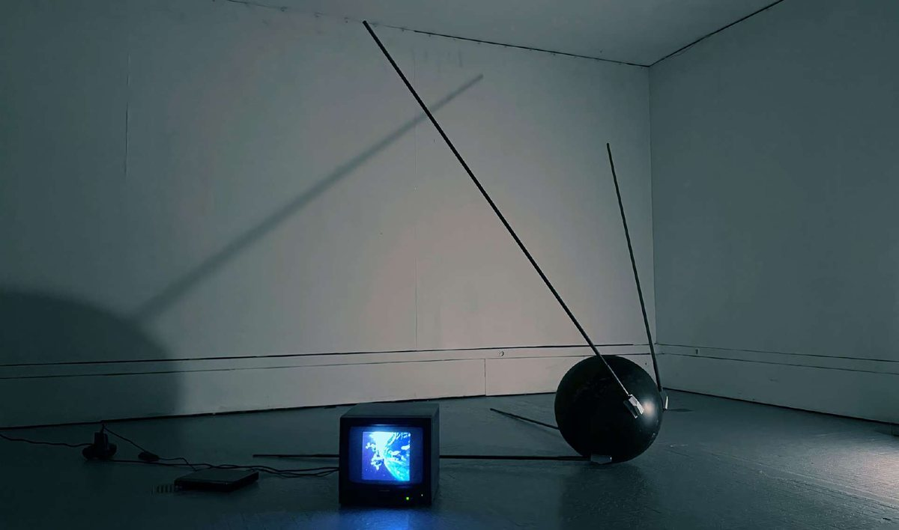

2026 · Projet en cours
Installation sculpturale avec vidéo
Installation sculpturale avec vidéo
Si Spoutnik était resté en orbite jusque dans un futur proche ? En réalisant une réplique, le projet cherche à réactiver sa charge symbolique dans un contexte contemporain, où l'espace est devenu un territoire saturé d'infrastructures et d'intérêts économiques.
Il s'agit ici d'interroger les continuités entre les logiques terrestres et extra-atmosphériques : surveillance, diffusion, marchandisation. Le satellite devient alors un point de convergence entre observation et projection, révélant les imaginaires qui structurent notre rapport à l'espace. L'installation propose ainsi une lecture critique de ces infrastructures invisibles et en devenir, en les replaçant dans un champ perceptible et sensible.